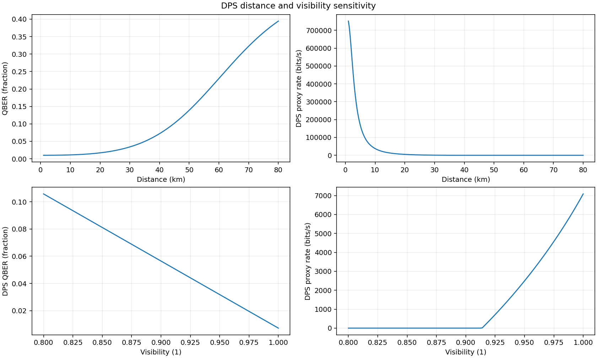
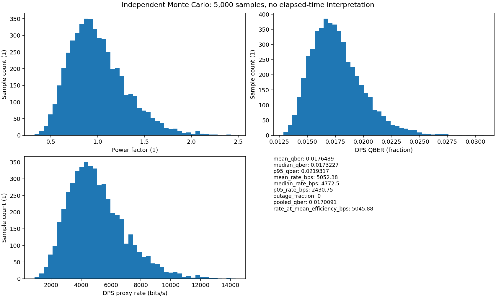
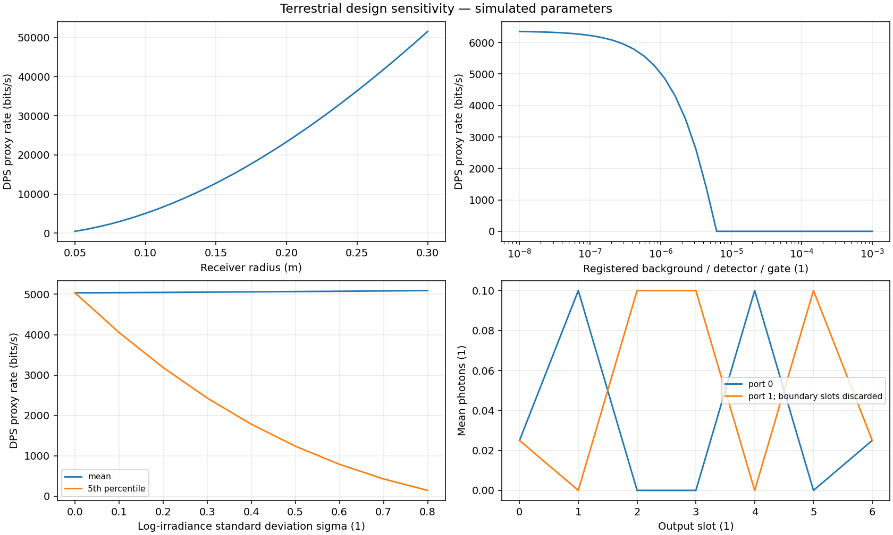
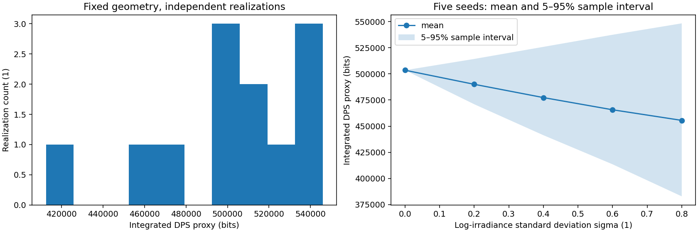

DPS illustrative rate proxy; no composable security bound established
Simulated data. Independent per-edge resources. No certified secret key. Parameters and units: results.json. Ensemble: ensemble.csv.
| mean_qber | 0.017445129743837315 |
| median_qber | 0.0171500617696305 |
| p95_qber | 0.021241717824371863 |
| mean_rate_bps | 5074.30891831093 |
| median_rate_bps | 4919.989142762337 |
| p05_rate_bps | 2656.8561917485517 |
| outage_fraction | 0.0 |
| pooled_qber | 0.01698294119944454 |
| integrated_rate_bits | 507352.5774092879 |
| time_outage_fraction | 0.0 |
| rate_at_mean_efficiency_bps | 5069.604928288331 |
| rate_at_mean_efficiency_scope | single continuously open gate at mean eta; includes unavailable samples in mean eta |




